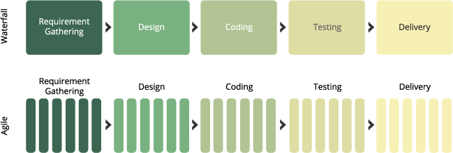
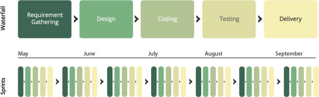

What is "Agile" and "Scrum"?
A Simple Guide For Everyone In the Company
Use the arrow keys <left> and <right> to navigate.
Written by Titus Stone.
Traditional software teams use a process known as the "Waterfall Method".
Waterfall has 5 Stages:
In Waterfall, each stage must be completed before the next stage can be done.
- This means all requirements must be done before the software can be designed...
- And the design must be done before the software can be coded.
Makes sense, right?
The problem is, each step can take a long time, weeks, maybe months.
And then what if the client changes their mind?
Because clients never change their mind.
Then where are you?
The client changed their mind but we've already spent 4 weeks gathering requirements and designing this amazing thing, which apparently now they don't want.
There is a better but unintuitive way.
Remember this mega 3 months of work?
What if we still did all that work, we still gathered requirements, still designed, still planned, but in a differnet order?
What if instead, we did a small slice of everything then delivered a small piece of value to the customer in a fraction of the time?

This means clients get to be happier faster.
And if they change their mind, we didn't waste too much time on it.
And if they change their mind, because we've done less work it will once again be easier to make them happy, faster.
And it's much easier to test a smaller change to make sure it's correct than a larger change.
This means our product starts to become more reliable.
And if we want to be an awesome company, we need reliable products.
But we still need to do all the work.
This means we need to do several cycles on the same thing to complete the same amount of work.

Each set of slices is organized linearly into a cycle called a "sprint"

Sprints are short, and several sprints make up the same amount of time as Waterfall.
But in order for this all to work, we need to follow one rule:
"Don't bite off more than you can chew."
This is where you come in.
Yes, you.
We need you to be OK with all of this.
The whole company needs to believe that smaller but frequent improvements to our product are better for the company.
And better for clients.
And trust us, we want to do our best, and make the best product we can.
So will you join us?
Pretty please?